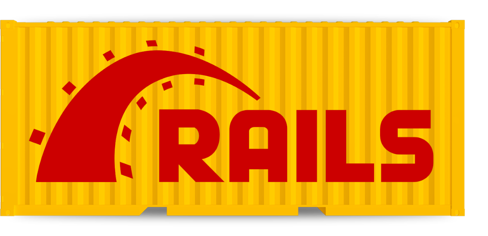
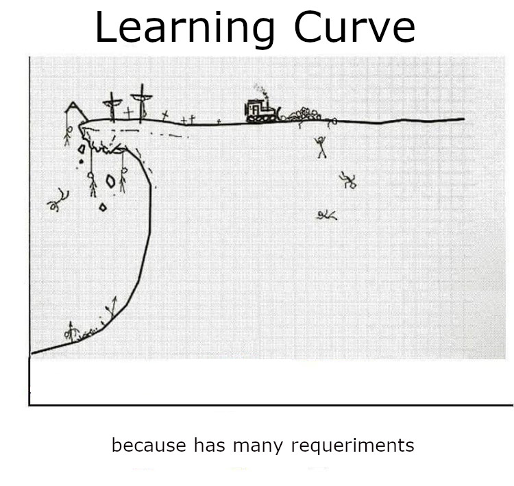
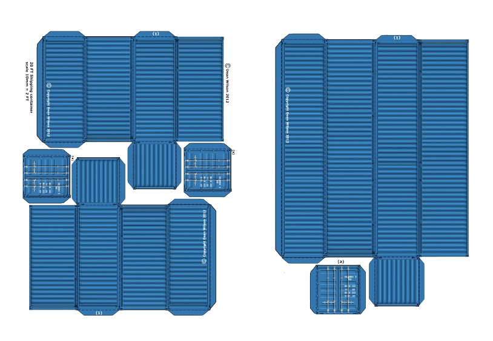
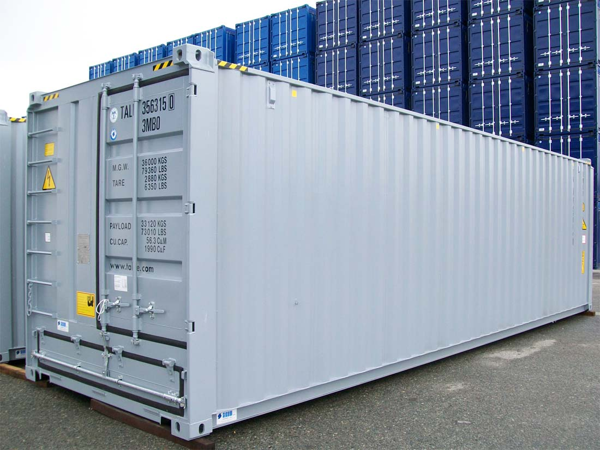
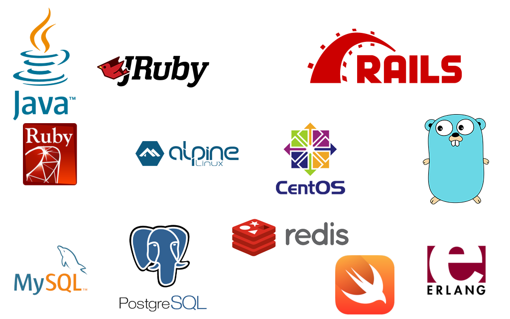
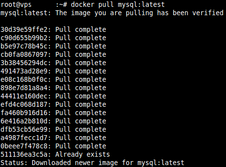
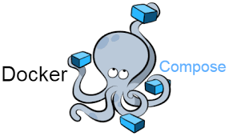

DIY Ro R (Part I)
Dockerize it yourself Ruby on Rails a talk for malaga.rb ( 2019-02-26 )
by @stbnrivas
muchas gracias por asistir
mi idea para esta charla es: dar la charla que a mi me habria gustado
que me diesen cuando iba a empezar a usar docker, quiero que sea util,
asi que si quereis preguntarme algo, intentare responder lo mejor posible.
para romper el hielo voy a empezar preguntando yo ¿cuantos de aqui usais docker?
What is
Let's ask to Wikipedia...
Docker is a computer program that performs operating-system-level virtualization, aka "containerization". It was first released in 2013 and is developed by Docker, Inc.
Docker started as internal project of dotCloud 2011-2013 by Solomon Hykes
Docker has made in Golang
You can write once, runs everywhere with Java Docker
Que es Docker? veamos que nos dice la wikipedia...
virtualization
container-ization (lightweight virtualization?)
podriamos decir que está la virtualizacion y la container-ization
full virtualization
hypervisor
it has hardware support
Tenemos:
Full Virtualization
virtualization has many implementation
la virtualizacion tiene muchas implementaciones, pero la idea común alrededor de todas
es tener hipervisor que corre fuera del kernel para arrancar otros kernel
Containerization
(Lightweight Virtualization?)
using advances features of linux kernel
http://www.makelinux.net/kernel_map/?src=api)
Y la container-ization donde no hay hipervisor y es el kernel de linux quien
haciendo uso de unas features muy especificas permite correr ese proceso virtual dentro del kernel,
sin tener la carga añadida de un hipervisor y un kernel.
docker needs minimal version of kernel
use chroot (1982), diferent root of filesystem
use namespaces (2002), process run as unique process on system PID, namespace PID
use cgroups (2007), limit the resources usables by process (cpu, memory, IO, network)
Por eso docker necesita una version minima que tenga implementada dichas caracteristicas
me.match(/(ruby|rails)+(\s|\w)+(dev)/)
Why should I use Docker?
specific version of ruby (we have rvm or rbenv)
dependencies restricted environment (bundle exec, gemset)
disponsable environments
encapsulate your application with single requirement docker installed
get multi-service application working on their workstation in an automated, repeatable, and efficient way.
make easier transportation to production because use same format
para mi como programador de ruby que ventajas me va a aportar el uso de docker
For me the more is not the better,
I started with mixed solution, rbenv, database dockerized
Ya que os he convencido, vamos a dockerizar todo. o NO
Before to start
Learning curve?
¿como de dificil es aprender docker?

the problem is prerequisites
Para alguien que esta empezando con Ruby, puede desenvocar en una curva de aprendizaje aun mayor porque,
en este caso es mejor afrontar los problemas de uno en uno.
Fortunately,
we know how to install ruby
bundler is our friend
we know our database favourite
we love the CLI
Por suerte si ya eres un desarrollador de ruby ya conoces muchos de esos pre-requisitos
docker image vs docker container
Example 1:
docker image is like a class
docker container is like an instance of class
Example 2:
docker image is like a software without install
docker container is like an installation of this software
Example 3:
docker image is like a blueprint
docker container is like a object build with this blueprint
imagen y contenedor son conceptos relaccionados pero no son lo mismo, vamos a intentar explicarlo a traves de ejemplos:
blueprint

docker image
object itself

docker container
y el ultimo ejemplo
docker images
https://hub.docker.com/

images of ruby
Todas las imagenes de docker estan disponibles en sitio web hub.docker.com que es como el
github de imagenes de docker. por ejemplo ruby tiene muchas imagenes de docker con diferentes etiquetas
docker volume
docker philosophy is disponsable
remove container => remove data
docker rm != docker stop
volume is the solution, A mounted volume acts like a shared directory
between the container and the host
En docker todo está pensado desde un enfoque desechable, usar el contenedor y tirar...
Docker CLI (image)
docker image --help
# docker [image]
docker image ls
docker image ls --all
docker image pull
docker image rm # docker rmi $SHA_IMAGE
docker image prune
docker image tag
docker image inspect
docker image build
docker images
docker images --all
see more CLI at
Esta es la interfaz de comandos disponible para las imagenes de docker desde la terminal
en cualquier maquina con docker instalado.
Docker CLI (container)
docker container --help
# docker [container]
docker container create
docker container start
docker container run
docker container exec
docker container logs
docker container pause
docker container restart
docker container rm
docker container prune
see more CLI at
Esta es la interfaz de comandos disponible para los contenedores de docker desde la terminal
en cualquier maquina con docker instalado.
Docker CLI (volume)
docker volume --help
# docker volume
docker volume create
docker volume rm
docker volume ls
docker volume inspect
docker volume prune
see more CLI at
Esta es la interfaz de comandos disponible para los volumenes de docker desde la terminal
en cualquier maquina con docker instalado.
Dockerfile Sintax
FROM ruby:2.3
RUN apt-get update \
&& apt-get install -y --no-install-recommends \
postgresql-client \
&& rm -rf /var/lib/apt/lists/*
WORKDIR /usr/src/app
COPY Gemfile* ./
RUN bundle install
COPY . .
EXPOSE 3000
CMD ["rails", "server", "-b", "0.0.0.0"]
see more sintax at
Este es un ejemplo de un fichero dockerfile con el que se puede construir una imagen de docker
What are docker images made of?
docker images has layers

we do not cover important improvements
Dockerignore
Clean best practise (rm -rf /var/lib/apt/list/*)
Sorting layers for improve cache
Multistage images
¿Pero de que estan hechas las imagenes de docker?
Demo time!!
We pray to lord of the light, For the demo is dark and full of terrors
he ido super rapido por las anteriores slides porque la idea es mostrar docker en funcionamiento
One doesn't simply runs one container
Pero uno no simplemente ejecuta un contenedor, como poco tambien necesitas una base de datos.

version: '1'
services:
db:
image: postgres
volumes:
- ./tmp/db:/var/lib/postgresql/data
web:
build: .
command: bash -c "rm -f tmp/pids/server.pid && bundle exec rails s -p 3000 -b '0.0.0.0'"
volumes:
- .:/myapp
ports:
- "3000:3000"
depends_on:
- db
docker-compose build
docker-compose run
to be continued...
thanks to
codespaceacademy
malaga.rb
Please visit andalucia.onruby.eu
powered by docker and reveal.js
 ?
?


 http://www.makelinux.net/kernel_map/?src=api)
http://www.makelinux.net/kernel_map/?src=api)